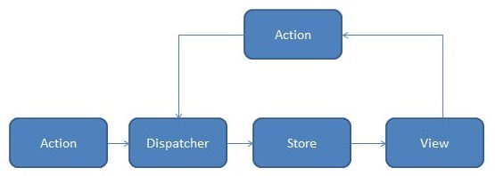

redux
redux 核心概念
要更新 state 中的数据，则要发起一个 action ，强制使用 action 得好处是能够知道应用发生了什么
为了把 action 和 state 连接起来，开发了一些函数（ reducer ）， reducer 接受 state 和 action 并返回新的 state
如: 可以先开发两个 reducer ，再开发一个 reducer 调用这两个 reducer ，进而管理整个应用的 state
三大原则
单一数据源
整个应用的 state 存储在一棵 object tree 中 ， 并且这个 object tree 只存在于唯一的 store 中
state 是只读的
唯一改变 state 的方法就是触发 action ，action 是一个用于 描述已发生事件 的普通 对象
确保了视图和网络请求都不能直接修改 state ， 它们只能表达想要修改的意图
使用纯函数来执行修改
通过编写一些纯函数 reducer， 描述 action 如何改变 state tree ， 随着应用变大，可以拆分多个 reducer ，分别独立操作 state tree 的不同部分
基础
Action
Action 是把数据从应用传到 store 的有效载荷。它是 store 数据的唯一来源。 一般来说你会通过 store.dispatch() 将 action 传到 store
Action 本质上是 JavaScript 普通对象。约定，action 内必须使用一个字符串类型的 type 字段来表示将要执行的动作。通常 type 会被定义成字符串常量。当应用规模越来越大时，建议使用单独的模块或文件来存放 action。
在 action 中添加 index 来表示用户完成任务的动作序列号，可以通过下标 index 来引用特定的任务，实际项目中在新建数据时生成唯一的 ID 作为数据的引用标识。
应尽量减少在 action 中传递的数据，传递 index 就比把整个任务对象传过去要好
Action 创建函数，就是生成 action 的方法，只是简单的返回一个 action， Action 创建函数也可以是异步非纯函数
Reducer
reducer 就是一个 纯函数，保持 reducer 纯净非常重要，永远不要在 reducer 里做这些操作 :
修改传入参数
执行有副作用的操作，如 API 请求和路由跳转
调用非纯函数，如 Date.now() 或 Math.random()
只要传入参数相同，返回计算得到的下一个 state 就一定相同。没有特殊情况、没有副作用，没有 API 请求、没有变量修改，单纯执行计算
redux 图示

首先写一些小的纯函数 reducers ，再合并成 reducer
function visibilityilter (state = 'SHOW_ALL, actiopn)' {
switch (action.tyle){
case 'SET_VISIBILITY_ILTER' :
return action.filter
default :
return state
}
}
function
switch (action.tyle){
case 'ADD_TODO' :
return [
...state ,
{
text : action.text
completed : false
}
]
default :
return : state
}
}
合并 reducer
function todoApp(state = {}, action) {
return {
todos: todos(state.todos, action),
visibilityFilter: visibilityFilter(state.visibilityFilter, action)
};
}
创建 store
import { combineReducers, createStore } from 'redux'
let reducer = combineReducers({ visibilityFilter, todos })
let store = createStore(reducer)
触发 action
store.dispatch({
type: 'COMPLETE_TODO',
index: 1
})
store.dispatch({
type: 'SET_VISIBILITY_FILTER',
filter: 'SHOW_COMPLETED'
})